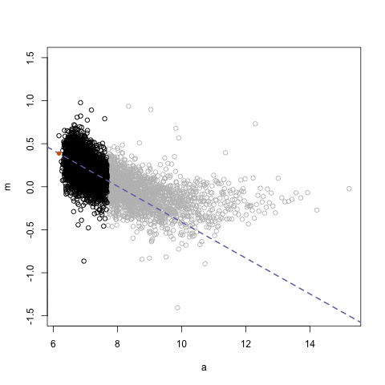

Recall because of odd schedule this week, feedback will be delivered by Thursday 10/12 9am. Your group can (optionally) resubmit your work by Friday 10/13 at 5pm.
Chalk talk
2.7 Bias-variance trade-off handouts:
Problem set 6
Information
Important dates/times:
Wed 10/11: Assigned.
Tue 10/17 8:30am: Due via synchronized pull request. No presentations for PS06.
Wed 10/18 9am: Feedback delivered by Andrew.
Thu 10/19 8:30am: (Optional) revisions due.
You will show
Teams: Individual
Presentations: None
Deliverables: One ready to submit pull request to the PS06 repo. At the very least, the following files should be modified/added:
PS06.Rmd: Source code
PS06.html: The output of PS06.Rmd.
README.md: Change rudeboybert in the URL to your GitHub ID so that both Andrew and I can open your PS06.html in a browser. Test this URL out!
Tips:
Example solutions
Problem set 5
Information
Assigned on Tue 10/3, due on Wed 10/11 (Monday schedule) 9am at which point there will be synchronized pull requests.
You will enter the Bike Sharing Demand Kaggle competition and fit a linear regression model to predict the number of rentals per hour, however using only 3 predictor variables. Fork a copy of the PS05 repo in the course GitHub Organization and then clone it in whatever version of RStudio you like. The focus of this exercise is to argue to decision makers why your 3 chosen variables provide the most “bang for your buck” in predicting bikeshare demand.
Teams: 2-3 people at your choosing. Once you’ve selected your group designate one person as team leaderwho has not previously been a team leader, who will:
Create a Slack DM that includes Albert, Andrew Kim (TA), and all team members. So far:
Team A: Sarah T, Jonathan, Timothy
Team B: Christien, Harrison
Team C: Brendan, Leonard, Vickie
Team D: Jenn, Pei, Anthony
Submit a single pull request on behalf of the group.
Submit a single submission to Kaggle on behalf of the group.
Deliverables: One ready to submit pull request to the PS05 repo (recall the GitHub submission process). At the very least, the following files should be modified/added:
PS05.Rmd: This should
Be well-commented and completely reproducible.
Involve an exploratory data analysis arguing why you chose the three variables you did.
PS05.html: The output of PS05.Rmd. This will be the presentation file for a randomly chosen set of groups on Wed 10/11.
README.md: Change rudeboybert in the URL to the GitHub ID of the team leader so that you can open your team’s version of PS05.html in a browser on Tuesday morning.
submission.csv
screen_shot.png or screen_shot.jpg: A screenshot of your Kaggle ranking.
Feedback will be delivered by Thursday 10/12 9am. Your group can resubmit your work by Friday 10/13 at 5pm.
Tips:
Think about the projection onto the sheet exercise. What variables provide the most “bang for your buck” for understanding what’s behind the sheet, in this case, the mechanism that determines bikeshare demand.
Again, do not worry about your score. This problem set is more about process than product.
Your decision process for determining which 3 to use can be based exclusively on your EDA. However, if you are looking for something “less unsystematic”, you can use the approaches in the ISLR readings for Chapter 6 listed above; this kind of approach is strictly optional.
Presentations
Example solutions
2.6 Bias-variance trade-off
Tue 10/3
Announcements:
Test out RStudio Shared Projects. Executive summary: it’s not quite using R in “Google Docs”, but rather “Google Doc”-like collaborative editing functionality in RStudio.
Note on model selection: Read ISLR Chapters 6 thru to the beginning of 6.2 (book pages 203-214, PDF pages 217-228) for a discussion on “model selection”: how to select which predictors to use in a final regression model.
Quiz on Wed 10/11 (Monday schedule) after PS05 submission, worth one tenth of participation grade = 1% of final grade. Read the following explanation of the bias-variance tradeoff and be prepared to answer questions on it.
Chalk talk
2.6 Finish PS03 discussion: How to pick optimal degrees of freedom \(df^*\)
Back to splines
Let’s look at:
Three of the splines models from Lecture 1.6, however for only 100 randomly sampled points \(y=f(x)+\epsilon\) to make the plots less dense
Plus an extreme case of “perfect” fitting
There is no new sample of points being collected nor crossvalidation going on here; just take the points and fit a model.
Chalk talk
2.6 Bias-Variance Trade-Off
2.5 Feedback on PS03 + Midterm I Review
Mon 10/2
Announcements:
Via GitHub Education get a number of free private repositories and other benefits.
Look at the image for Problem set 3, and then answer these two questions with your seatmates.
library(tidyverse)
mtcars <- mtcars %>%
# A tibble is very similar to a data frame, but when you view its contents
# in the console, it only prints out about 30 rows
as_tibble() %>%
mutate(ID = 1:n()) %>%
select(ID, mpg, hp)
# Number of folds
k <- 5
# Q1: What's the difference between these two in terms of crossvalidation?
# Hint: table() function to get frequency table
fold_scheme_1 <- sample(1:k, size=nrow(mtcars), replace = TRUE)
fold_scheme_2 <- rep(1:k, len=nrow(mtcars))
# A1:
# -fold_scheme_2 has roughly equal numbers of observations in each fold
# -fold_scheme_1 only has equal numbers of observations in each fold in
# expectation
table(fold_scheme_1); table(fold_scheme_2)
mtcars %>%
# Q2: Why do we sample_frac 100% first?
sample_frac(1) %>%
mutate(fold = rep(1:k, len=n()))
# A1: This effectively randomizes the fold assignment by first shuffling the
# rows. Say we didn't do this and mtcars had an inherent ordering to it?
# Then our fold assignment would not be at random!
Problem set 4
Information
Assigned on Tue 9/26, due on Tue 10/3 9am at which point there will be synchronized pull requests.
You will fit your first model with multiple predictors!
Details:
Teams: Individual
Presentation: Done
Revision round: None
Deliverables: One ready to submit pull request to the PS04 repo (recall the GitHub submission process). At the very least, the following files should be modified/added:
PS04.Rmd: Your work
PS04.html: The output of PS04.Rmd.
README.md: Change rudeboybert in the URL to the GitHub ID so that you can open PS04.html in a browser.
Feedback
Example solutions
2.3 Regression for prediction
Tue 9/26
Announcements:
Since there are no presentations/discussions today for PS03, no revisions due on Thursday.
Pull request is now due at 5pm today.
Extra office hours today from 1:30-3pm in Seeley Mudd 208.
Let’s do an exploratory data analysis of the data for problem set 4. For \(i=1, \ldots, 400\) individuals, we are interested in their credit card balance. Alas, no sampling information is provided, so we can’t make any statements on the generalizability of this analysis. Recall our model formulation: \(y_i = f(\vec{x}_i) + \epsilon_i\):
nycflights13: Info for all 336K domestic flights that left an NYC airport in 2013 (JFK, EWR, or LGA)
AC students: Start networking! Have your name and LinkedIn profile appear on the Amherst website by filling out this Google Form. Recruiters pay üíµüí∂üí≤ to LinkedIn to be able to do targeted üîçs of potential hires!
Announcements:
Amherst College Department of Mathematics and Statistics Amherst College Statistics Colloquia tonight.
Title: Lessons for official statistics production around the world from the experience of Greece
Speaker: Andreas Georgiou ‘83, Visiting Lecturer in Economics Amherst College (speaker background)
When/where: Thursday, September 21, 2017 7:00 pm in Seeley Mudd 206.
Abstract: The seminar will address what lessons can be gleaned from the experience with official statistics production in Greece, both in the period up to the onset of the debt crisis and since then. The seminar will discuss lessons about the appropriate institutional setting, legal framework, statistical culture and statistical practices.
Updated/clarified syllabus to reflect:
Typical problem set timeline under problem sets
Expectations on readings under materials/readings
Add to \(k=2\) CV pseudocode chalk talk from Lec 1.7: using results of CV to then make appropriate predictions.
Starting topic 2 today: Continuous outcomes part I. We’ll come back to the final subtopic of topic 1, the bias-variance tradeoff, later.
Digression: Chalk talk
2.1: \(\log()\) and \(\log_{10}()\) transformations.
Digression: The importance of log-transformations
Let’s consider a set of post-2000 movies from the bechdel data set (type ?bechdel for details) and plot:
x-axis: movie budget (in 2013-inflation adjusted US dollars)
y-axis: domestic gross (in 2013-inflation adjusted US dollars)
We see there is a right-skew to both the x and y-values. This is because we are comparing big budget Hollywood blockbusters with (likely) lower budget independent films. Hence, it’s really hard to see what’s going on at the lower-end of the budget scale. Let’s unskew both variables and compare not absolute differences, but rather, relative differences i.e. differences in “order of magnitude” using a log10() transformation:
We can see a little better what’s going on at the lower end of the budget scale. However the values on the axes require a little thinking to process. For example at \(x=7\), this corresponds to movies with a budget of \(10^7 = 10,000,000\) dollars. So instead, let’s rescale both axes so that they display the data in their original units.
The two plots are identical, but the values on the axes are different.
In the rescaled x and y axes plot, equivalent distances on each axes correspond to not equivalent absolute differences, but equivalent relative/multiplicative differences. So for example, the horizontal distance on the plot from Budget = 1e+05 = \(10^5\) to Budget = 1e+06 = \(10^6\) is equal to the horizontal distance on the plot from Budget = 1e+06 = \(10^6\) to Budget = 1e+07 = \(10^7\).
Local regression: executive summary via .gif

Chalk talk
2.1 Local regression i.e. LOESS AKA LOWESS
Corresponding book chapters
ISLR: 7.6
CASI: 19.8
Using loess()
Let’s fit a LOESS smoother model to
x: (top of the hour) temperature recorded for flight
Fit a model: loess(y~x, data) (Note there is also a lowess() command, but AFAIK there is no convenient predict() function).
Predict based on a model: predict(model_loess, newdata)
# Install this package:
library(tidyverse)
library(nycflights13)
library(broom)
# Let's join flight and join it with weather data after setting the seed value
# for the random number generator to ensure we have "replicable randomness"
set.seed(76)
flights_sample <- flights %>%
left_join(weather, by=c("month", "day", "hour", "origin")) %>%
filter(!is.na(dep_delay) & !is.na(temp)) %>%
sample_n(1000) %>%
select(temp, dep_delay) %>%
mutate(ID = 1:n())
# Create disjoint training and test data sets of size 500 each:
flights_sample_train <- flights_sample %>%
sample_n(500)
flights_sample_test <- flights_sample %>%
anti_join(flights_sample_train, by="ID")
# 1. Fit model
model_loess <- loess(dep_delay ~ temp, data=flights_sample_train)
# The next two lines take the fitted model and output a data frame with the
# original (x,y) values, but also
# * y_hat in the column .fitted.
# * y - y_hat = residual in the column .reside
# You can ignore the warnings about purrr
model_loess_df <- model_loess %>%
broom::augment()
View(model_loess_df)
# Plot
ggplot(model_loess_df, aes(x=temp)) +
geom_point(aes(y=dep_delay)) +
geom_line(aes(y=.fitted), col="red", size=1)
# 2. Pretend for a moment you don't know the true y = dep_delay, take the
# previously fitted model and make predictions on test set:
flights_sample_test <- flights_sample_test %>%
mutate(dep_delay_hat = predict(model_loess, newdata=flights_sample_test))
# Now let's stop pretending and compare our predictions (red points) to the
# truth (black points)
ggplot(flights_sample_test, aes(x=temp)) +
geom_point(aes(y=dep_delay)) +
geom_point(aes(y=dep_delay_hat), col="red", size=1)
# Now let's evaluate the RMSE
flights_sample_test %>%
summarise(MSE = mean((dep_delay - dep_delay_hat)^2)) %>%
mutate(RMSE = sqrt(MSE))
geom_smooth() uses LOESS when n < 1000
Look at the help file ?ggplot2::stat_smooth under method: default for n<1000 is loess.
# When more than 1000 obs, geom_smooth uses another method
dim(flights_sample)
ggplot(flights_sample, aes(x=temp, y=dep_delay)) +
geom_point() +
geom_smooth(se=FALSE, col="red", size=1)
# When less than 1000 obs, geom_smooth uses LOESS
dim(flights_sample_train)
ggplot(flights_sample_train, aes(x=temp, y=dep_delay)) +
geom_point() +
geom_smooth(se=FALSE, col="red", size=1)
# How do I "tune" a LOESS smoother? Play around with the span value below:
ggplot(flights_sample_train, aes(x=temp, y=dep_delay)) +
geom_point() +
geom_smooth(se=FALSE, col="red", size=1, span=0.2)
Problem set 3
Information
Assigned on Thu 9/19, due on Tue 9/26 9am at which point there will be synchronized pull requests.
Baby’s first crossvalidation! You will implement from scratch a full crossvalidation and use it to find the splines model with the best out-of-sample predictive ability in terms of the Root Mean Squared Error (RMSE). The data include the following variables:
ID unique identifier variable
x univariate predictor of n=3000 equally spaced values between -10 and 90
y outcome variable generated from \(y = f(x) + \epsilon\) where
\(\epsilon\) is a random variable distributed with mean 0 and standard deviation \(\sigma\)
Both \(f\) and \(\sigma\) are only known by Albert! Not the same as the video in Lecture 1.3.
Notes:
Teams: Individual. I highly recommend you work in groups especially for the planning and eventually coding questions, but the ultimate code you submit should be your own.
Deliverables: One ready to submit pull request to the PS03 repo (recall the GitHub submission process). At the very least, the following files should be modified/added:
PS03.Rmd: Your work.
PS03.html: The output of PS03.Rmd. No presentations for this problem set.
README.md: Change rudeboybert in the URL to the GitHub ID so that you can open your version of PS03.html in a browser easily.
Tips:
We’re ramping up the coding in this assignment! Don’t spin your wheels!
Pseudocode
Don’t start coding right away! Make a plan of attack using pseudocode that is language independent:
You don’t want to conflate the what (the algorithm) and the how (the code) of the problem set. Lay out the algorithm on paper, blackboard, whiteboard, etc, first!
In exams, you won’t be asked to write code, but rather pseudocode.
.Rmd source code. Click on “Raw” button and save to .Rmd in your PS03 folder/RStudio project.
1.7 Crossvalidation
Tue 9/19
Announcements:
Tip of the day: Another reason I’m a big fan of Slack, quick videoconferencing with screensharing directly in Slack using appear.in. In a DM type /appear NAME_OF_UNIQUE_CONFERENCE_ROOM. Ex: /appear purple_monkey_dishwasher.
Problem set 02 presentations! Under Problem set 2 section.
Chalk talk
1.7 Crossvalidation
Corresponding book chapters
ISLR: [5, 5.1.3] (Start of Chapter 5, through to the end of 5.1.3, stop just before 5.1.4)
CASI: [12, 12.2]
1.6 Texas sharpshooter fallacy
Mon 9/18
Announcements:
Tip of the day: Keyboard shortcut %>% with command+shift+m on macOS and ctrl+shift+m on windows.
Philosophical fallacy of the day. “Texas Sharpshooter Fallacy”: When an argument is made and confirmed using the same set of information. Watch first 50s of this video: https://www.youtube.com/embed/_tcBsryYd6s
Chalk talk
1.6 Texas sharpshooter fallacy scenarios
Shooting at a barn
Science
Machine learning in general
Scenario D)
Let’s call the following example “Scenario D) Splines”. Recall from our Intro to Splines lecture the different fitted models based on different degrees of freedom (i.e. different numbers of knots).
Scenario D): Score
Let’s define a notion of “score” to evaluate how good the above fits are: mean squared error (MSE). Image courtesy Chris Albon’s excellent Machine Learning Flashcards.
Chalk talk
1.6 Mean Squared Error
Scenario D)
Here are the Root Mean Squared Errors for the plot above. df=50 has lowest RMSE. Is df=50 for out-of-sample prediction? What did the Texas Sharpshooter Fallacy say in the machine learning case?
df
RMSE
2
2.935
10
1.874
25
1.834
50
1.784
Chalk talk
1.6 The “rather” of Scenario D) (to avoid the Texas Sharpshooter Fallacy).
1.5 The theory of splines + resampling
Thu 9/14
Announcements:
“Gah! I can’t tell who you are from your Slack names!” Please go to: “STAT 495 Amherst…” on top left of Slack -> “Preferences” -> “Messages & Media” -> “Names” -> Click the “Full & display names” radio button.
Splines are piecewise continuous polynomials with smoothness constraints:
Chalk talk
1.5 Splines
How are splines curves fit?
How to obtain the fitted \(\widehat{\beta}_0\), \(\widehat{\beta}_1\), \(\widehat{\beta}_2\), and \(\widehat{\beta}_3\) necessary for all \(K+1\) cubic polynomials \[
\widehat{y}_i = \widehat{\beta}_0 + \widehat{\beta}_1 x_i + \widehat{\beta}_2 x_i^2 + \widehat{\beta}_3 x_i^3
\]
for each interval? A combination of calculus (derivatives) and linear algebra (solving a system of equations). See this PDF if you’re curious.
Sampling paradigm
Chalk talk
1.5 Sampling
Resampling paradigm
Moral: You want the
the process represented by the red dashed line/arrow (resampling) to mimic as much as possible
the process represented by the black dashed line/arrow (sampling)
Problem set 2
Information
Assigned on Thu 9/12, due on Tue 9/19 9am at which point there will be synchronized pull requests.
You will enter the Sberbank Russian Housing Market Kaggle competition and fit a spline model to predict the outcome variable price_doc: the sale price of a piece of real estate. The data has been pre-downloaded and included in the PS02 repo in the course GitHub Organization.
Teams: 2-3 people at your choosing. Once you’ve selected your group designate one person as team leader, who will:
Create a Slack DM that includes Albert, Andrew Kim (TA), and all team members. So far:
Team A: Sara (no “h”), Meredith, Brenna
Team B: Jeff, Luke, Andrew
Team C: Jonathan, Sarah (with “h”), Timothy
Team D: Pei, Jenn, Anthony
Team E: Leonard, Vickie, Brendan
Team F: Abbas, Caleb, Kiryu
Team G: Harrison, Christien
Team H: Meron, Wayne, Tasheena
Submit a single pull request on behalf of the group.
Submit a single submission to Kaggle on behalf of the group.
Deliverables: One ready to submit pull request to the PS02 repo (recall the GitHub submission process). At the very least, the following files should be modified/added:
PS02.Rmd: This should
Be well-commented and completely reproducible.
Involve an exploratory data analysis.
Argue why you chose the model you did.
PS02.html: The output of PS02.Rmd. This will be the presentation file for a randomly chosen set of groups on Tue 9/19.
README.md: Change rudeboybert in the URL to the GitHub ID of the team leader so that you can open your team’s version of PS02.html in a browser on Tuesday morning.
submission.csv
screen_shot.png or screen_shot.jpg: A screenshot of your Kaggle ranking.
Tips:
Again, do not worry about your score. This problem set is more about process more than outcome.
.Rmd source code. Click on “Raw” button and save to .Rmd in your PS02 folder/RStudio project.
1.4 Intro to splines
Tue 9/12
Announcements: New office hours location: Seeley Mudd 208 (lounge)
Chalk talk
Analogy of what we are doing
Splines
Splines are piecewise cubic polynomials with smoothness constraints. The code corresponding to the video at the end of Lecture 1.3 is below. (If you’re curious, the code that created multiple_df, exercise, fitted, and truth are available on lines 1-86 of https://bit.ly/rudeboybert_splines; these were run behind the scences to keep the code below simple.)
library(tidyverse)
library(broom)
# Load some pre-computed data
load(url("https://rudeboybert.github.io/STAT495/static/splines.RData"))
# Here is a wacky function f(x)
f <- function(x){
f_x <- 0.2*x^11*(10*(1-x))^6+10*(10*x)^3*(1-x)^10
return(f_x)
}
# For 500 equally spaced values of x between 0 & 1, let's compute and plot f(x) in red.
# Recall that f(x) is the systematic component, or "the signal"
values <- data_frame(
x = seq(from=0, to=1, length=500),
f_x = f(x)
)
values %>%
ggplot(aes(x=x)) +
stat_function(fun = f, col="red", size=1)
# We now add the unsystematic error component epsilon to f(x) i.e. the noise, to
# obtain our y's, and hence our observed points in black (x, y)
values <- values %>%
mutate(
epsilon = rnorm(500, 0, sd = 2),
y = f_x + epsilon
)
values %>%
ggplot(aes(x=x)) +
stat_function(fun = f, col="red", size=1) +
geom_point(aes(y=y))
# But remember in real life, we won't know the red curve! If we did, then why
# are we doing any of this? All we observe are the black points. Let's "pretend"
# like we don't know what the red curve is!
values %>%
ggplot(aes(x=x)) +
geom_point(aes(y=y))
# We now fit a 'smoothing spline'. Think of it as a piece of string with a
# specified amount of flexibility, where the flexibility is controlled by the
# "degrees of freedom" df. This blue curve is a "guess/estimate" of the red
# curve f(x), which recall, we are pretending we don't know. Also observe how we
# use the broom::augment() function to convert the output of smooth.spline to
# tidy data frame format.
smooth.spline(values$x, values$y, df=5) %>%
broom::augment() %>%
ggplot(aes(x=x)) +
geom_point(aes(y=y)) +
geom_line(aes(y=.fitted), col="blue", size=1)
# Play around with the df argument in smooth.spline() above.
# Now let's compare smoothing splines using four different values of the degrees
# of freedom in a plot I precomputed. Which do you think is best?
multiple_df
# I would say that df=10 roughly is best. df=2 is not quite flexible enough,
# where as df=50 seems to no longer fitting to signal (the true function f) and
# is now fitting to noise. In other words, it is overfitting to this particular
# data set.
multiple_df +
stat_function(fun = f, col="red", size=1)
# Exercise. Here are a set of points from a different f(x) and epsilon. With
# your finger trace what you think the true f(x) function looks like. In other
# words, separate the signal from the noise!"
exercise
# Let's fit a spline with 25 degrees of freedom. How close is this to the truth?
fitted
# Ready? Here is the truth! How close were you? Note the noise is normal with mean 0
# and sd = 12!
truth
1.3 Intro to modeling
Mon 9/11
Announcements:
Math/stat table for lunch 12-1:30 Terrace Room A, Valentine
All problem sets assigned/due/presented on Tuesdays
Perform pull request for PS01 as a class
For tomorrow, watch 9m49s video linked below.
Topics:
Supervised vs unsupervised learning
Modeling for supervised learning
(If time) Sampling and resampling
Chalk talk
1.3 Supervised vs unsupervised
Example of unsupervised learning
Colin Woodard’s idea of 11 Nations of North America:
Chalk talk
1.3 Model for supervised learning
POTUS 45 on models
Teaching my students to separate systematic model component from irreducible error component when fitting for outcome variable pic.twitter.com/7jzuqEHTdp
Early on we keep things simple: univariate \(\vec{x}\) so that we visualize easily
For tomorrow (Tuesday), watch the following 9m49s video:
Problem set 1
Information
Assigned on Thu 9/7, due on Mon 9/11 9am.
Baby’s first Kaggle competition and GitHub pull request! Specifically the Titanic: Machine Learning from Disaster competition. You will be submitting predictions on who survived/died amongst the passengers randomly assigned to the test set and viewing your Kaggle leaderboard score.
Teams: Individual
Deliverables: A ready to submit pull request to the PS01 repo, in other words complete only steps 1-5 of the problem set submission process. However, you will all be submitting/making the pull request (step 6) at the same time as a group in lecture. The following files should be modified/added from the original
PS01.Rmd: This should be well-commented and completely reproducible. In other words, if someone else takes this repo, they should be able to reproduce your work with one click of the mouse. This necessitates taking an empathetic view of other users.
PS01.html: The output of PS01.Rmd
submission.csv: Your predictions of who survives based on something other than sex. Current set to match gender_submissions.csv on Kaggle.
screen_shot.png or screen_shot.jpg: A screenshot of your Kaggle ranking. Be sure to “clean” your browsers.
Any other necessary files.
Tips:
This problem set is only about getting used to the process, not about anything substantive.
You don’t have to fit actual model for now, but feel free to if you want. Don’t even worry about how good your predictions are, just focus on getting a score.
Do not spin your wheels! If you are stuck, take a breather, and consult others.
Note added 9/7 1:30pm: There is an error in PS01.Rmd; replace line 4 of PS01.Rmd so that it reads:
Question What is the difference between statistics, data science, and machine learning?
Answer Ben Baumer at Smith posed: “Instead of obsessing over Venn diagrams of what topics are within the domains of which disciplines, I ask instead”: What if we blew up math, stats, CS, and all their legacies and started over? What would this field look like/be called?"
Definitions
Arthur Samuel (1959): Machine learning is the subfield of computer science that gives computers the ability to learn without being explicitly programmed.